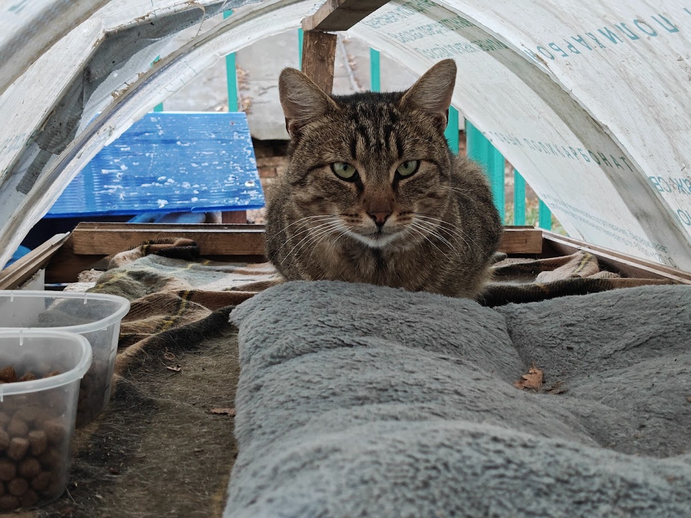
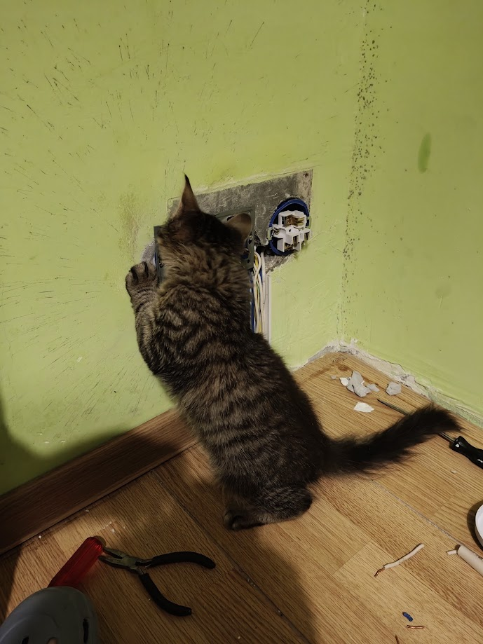
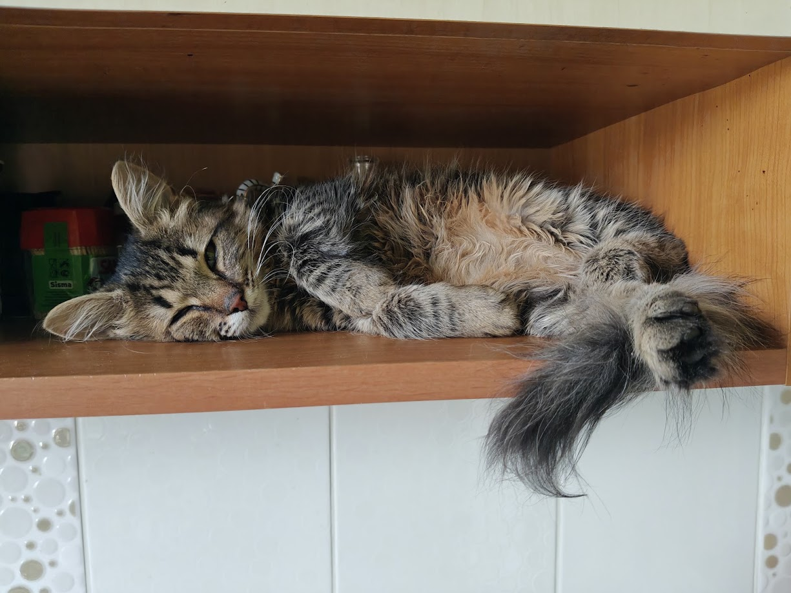

Мы — команда волонтёров проекта «Северные котята», посвятивших себя помощи бездомным кошкам нашего города. Каждый день мы спасаем жизни тех, кто оказался на улице без защиты и заботы.
Наша миссия — не просто накормить бездомных животных, а обеспечить им комплексную помощь: от лечения и стерилизации до поиска любящего дома.
Присоединяйтесь к нам в Telegram-канале, где мы делимся историями спасения, рассказываем о подопечных и координируем помощь!



Мы открыли новую передержку для наших подопечных! Теперь у нас есть больше места для спасённых котиков.
В этом месяце мы провели стерилизацию 15 уличных кошек, что поможет контролировать численность бездомных животных.
Мурзик был найден с травмой лапы. Благодаря вашей поддержке, он прошёл лечение и теперь ищет любящий дом.
Оказываем ветеринарную помощь пострадавшим и больным животным. Оплачиваем лечение, покупаем лекарства и обеспечиваем реабилитацию.
Ищем ответственных и любящих хозяев для наших подопечных. Тщательно проверяем будущих владельцев и поддерживаем связь после передачи.
Проводим программу стерилизации уличных кошек для контроля численности бездомных животных и улучшения их качества жизни.
Регулярно кормим бездомных кошек в различных точках города. Организуем пункты кормления и запасы еды на зиму.
Милый рыжий котик, 2 года. Найден на улице с травмой лапы. Прошёл лечение, полностью здоров.
Ищет домБелая пушистая кошечка, 1 год. Была подобрана зимой, прошла стерилизацию и вакцинацию.
Ищет домСерый полосатый кот, 3 года. Долгое время жил на улице, теперь социализирован и готов к дому.
Ищет домЧёрная кошечка, 6 месяцев. Спасена из подвала, проходит курс реабилитации после болезни.
На лечении